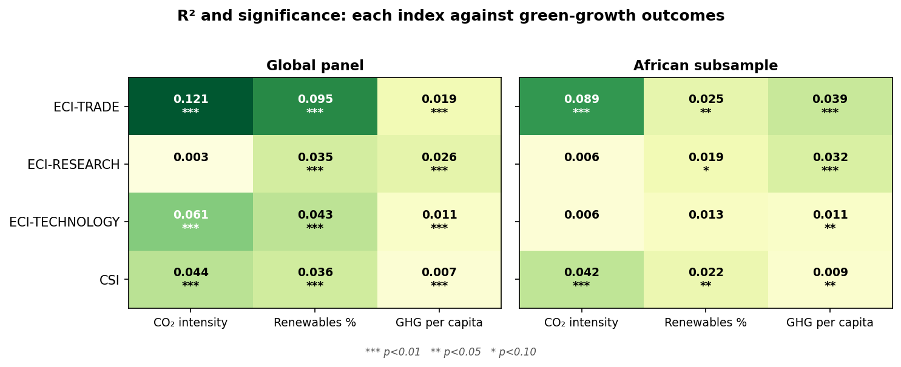
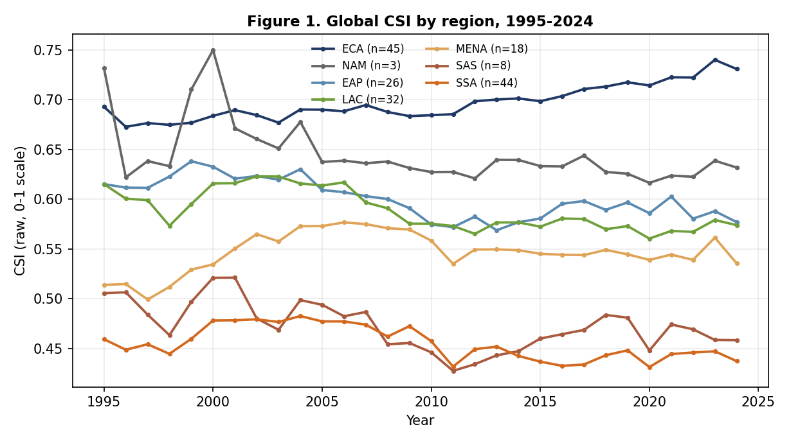

Publications repository
Everything the lab publishes — methodology specifications, working papers, conference material and our own critical reviews — with the data and code to reproduce it. Documents are versioned; superseded versions remain available for the record.
Tests the CSI against three ECI variants (Trade, Technology, Research) on three green-growth outcomes — CO₂ intensity of GDP, renewable-energy share, GHG per capita — over a 53-country panel (1998–2024) and its 18-country African subsample. The CSI is significant for all three outcomes in both samples (6/6); ECI-TECHNOLOGY manages 2/3 and ECI-RESEARCH 1/3 on the African subsample. The "African anomaly" lives almost entirely in the technology and research variants — exactly the ones the green-growth literature leans on.

Because the poster's associations are correlational, this supplement reports two stronger specifications and presents them in full — including where they find nothing. Blundell–Bond System GMM finds no coefficient surviving conventional significance once dynamics and endogeneity are addressed (unsurprising: ~92% of CSI variation is between countries, leaving GMM little within-variation to work with). The Hansen (1999) threshold regression, which exploits the full cross-country variation, finds strong regime non-linearities in all twelve specifications (bootstrap p < 0.01) — including an African renewables regime shift above a CSI threshold of −0.625.
Computed from BACI HS6 unit values: each importer's unit value per consumer-good code compared against the world-average export unit value, aggregated with import weights. The result overturns the simple xenocentrism story — African economies pay 7% below world average while non-African economies pay 13% above; premium-paying tracks income, not status. But disaggregation revives the thesis in sharper form: Nigeria imports the cheap variety in nearly every chapter, yet pays +56% above the world average for wigs and human hair — a known cultural-status category. Xenocentric premia exist, but they are narrow, category-specific, and invisible in aggregates.
The lab's own strongest critique of its flagship index. Finds that the CSI as built measures capability–import mismatch and consumption openness — two useful constructs, but neither is yet the cultural preference α the original thesis targeted; that the Tier 1 ↔ Tier 2/3 correlation of +0.06 is itself the diagnosis; and that the CES price inversion is currently symbolic rather than identifying. Lays out, in order of leverage, the additions that would close the gap: the peer-adjusted CSI, category-level preference measurement, an income-leakage measure, and the institutional layer.
Specifies the two further passes on the measurement ladder: the Tier-2 foreign expenditure share from UNIDO INDSTAT production data via an HS↔ISIC concordance, and the Tier-3 price-adjusted structural α under an assumed elasticity of substitution. Includes the honest caveats on gross-output vs value-added and on rebased price indices.
The first global portrait of the index: regional trajectories (Europe & Central Asia leading and rising; Sub-Saharan Africa persistently ~1.5 SD below), the Africa–rest gap, top and bottom rankings, and the correlation structure — export diversity (+0.74) and complexity (+0.71) strongest positive, food-import dependence (−0.55) strongest negative. All figures reproducible from the released panel.

The full specification of the headline index: CES microfoundation, PCI-aware capability, the consumption-goods restriction, the five-step construction, verification results (including the honest account of how v0.1–0.2 failed and why), limitations, and the locked methodological decisions. Includes the in-project BEC-style end-use classification, published in full for review.
The original project proposal: reject Say's Law, assert consumer sovereignty, diagnose consumer xenocentrism as an economic force, and measure its footprint. The project has since been renamed and substantially rebuilt — but the founding questions are unchanged.
Reproducibility standard. Every empirical claim in these documents traces to a released dataset and a released pipeline. If you cannot reproduce a number, that is a bug in our publication — report it.